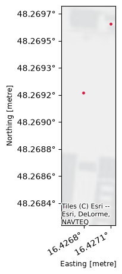
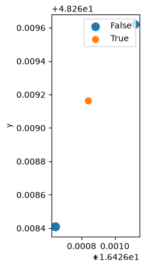
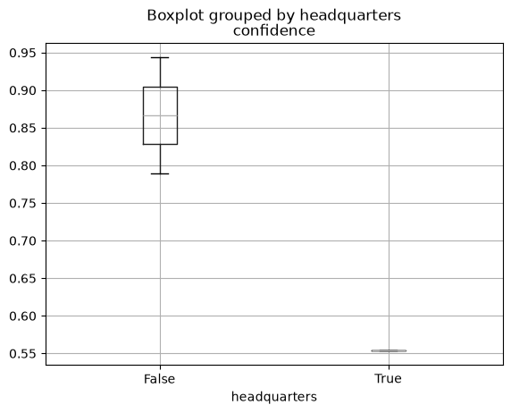

Tips and Tricks#
Data Inspection#
The most basic Fusion Graph possible doesn’t do any processing at all. It consists of one input node and one output node only. Here, we will use such a graph to inspect its data flow.
Input#
With recorded data sources, you can leverage their input nodes to inspect the data loaded into MuFASA’s internal representation:
from mufasa.io.inputs import GeoJsonInput
src = GeoJsonInput("sensor_b.geojson")
src.items()
[Observation(geometry=<POINT (16.427 48.268)>, timestamp=0.0, properties={}, confidence=0.9433776719597745),
Observation(geometry=<POINT (16.427 48.269)>, timestamp=0.0, properties={'headquarters': True}, confidence=0.5543464775591364),
Observation(geometry=<POINT (16.427 48.27)>, timestamp=0.0, properties={}, confidence=0.7896239763630372)]
Infer Bounding Box#
This allows you to infer the bounding box from your input data:
from mufasa import BoundingBox
import numpy as np
import shapely
src_bounds = np.array([shapely.bounds(i.geometry) for i in src.items()])
min_x = src_bounds[:, 0].min().item()
min_y = src_bounds[:, 1].min().item()
max_x = src_bounds[:, 2].max().item()
max_y = src_bounds[:, 3].max().item()
x_tol = (max_x - min_x) * .1
y_tol = (max_y - min_y) * .1
bbox = BoundingBox(
min_x - x_tol,
min_y - y_tol,
max_x + x_tol,
max_y + y_tol,
)
bbox
BoundingBox(min_x=16.426595536135327, min_y=48.26828757800471, max_x=16.427171820581485, max_y=48.269740871163776)
Output#
Use a LocationOutput node
(or its MapOutput equivalent)
to collect the data output by its predecessors into a Python list.
from mufasa.io.outputs import LocationOutput
out = LocationOutput()(src)
from mufasa import Graph
from mufasa.graph import _suggest_utm_crs
graph = Graph(
inputs=[src],
outputs=[out],
bbox=bbox,
resolution=(1, 1),
crs=_suggest_utm_crs(bbox),
)
graph.run()
out.result
[Observation(geometry=<POINT (16.427 48.268)>, timestamp=0.0, properties={}, confidence=0.9433776719597745),
Observation(geometry=<POINT (16.427 48.269)>, timestamp=0.0, properties={'headquarters': True}, confidence=0.5543464775591364),
Observation(geometry=<POINT (16.427 48.27)>, timestamp=0.0, properties={}, confidence=0.7896239763630372)]
Here, this verifies that all input data had been passed on.
Visualization#
MuFASA provides two built-in visualizations: one for plotting fusion architectures and the other for showing data on a map.
Important
This requires MuFASA to be installed with vis extra dependencies.
Redefine the GeoJsonInput node from above
and connect it to a Visualization node.
The input from the previous section is already connected in a Fusion Graph and unfortunately can’t be reused.
from mufasa.io.outputs import Visualization
src = GeoJsonInput("sensor_b.geojson")
vis = Visualization()(src)
graph = Graph(
inputs=[src],
outputs=[vis],
bbox=bbox,
resolution=(1, 1),
crs=_suggest_utm_crs(bbox),
)
Note that we need to set a bbox and resolution this time
– although the graph isn’t processing any Map.
This is due to the fact that the Visualisation node also accepts Maps as input.
This bounding box will also bound the visualization.
The CRS is optional, but it will enhance the visualization with map tiles.
You can now visually inspect the graph structure:
graph.plot_graph()
And finally, after running the fusion, show()
the latest snapshot of data fed to the visualization node over its first input (thus the index 0):
graph.run()
vis.show(0)
/usr/local/lib/python3.13/site-packages/contextily/tile.py:680: UserWarning: The inferred zoom level of 19 is not valid for the current tile provider (valid zooms: 0 - 16).
warnings.warn(msg)

There’s also an animate() method
for data with different timestamps.
GeoPandas Integration#
MuFASA integrates nicely with Pandas[1] and GeoPandas[2]. In fact, GeoPandas is used in the Visualization node behind the scenes. Here are some tips and tricks on how to utilize (Geo)Pandas with MuFASA.
Installation
If you haven’t installed MuFASA with vis extra dependencies, then you need to install GeoPandas separately:
pip install geopandas
import geopandas
Convert to DataFrames#
Pandas and GeoPandas are capable of loading lists of Python Dataclasses into their DataFrames.
Thus, they understand MuFASA’s Locations.
src_df = geopandas.GeoDataFrame(src.items())
src_df
| geometry | timestamp | properties | confidence | |
|---|---|---|---|---|
| 0 | POINT (16.42664 48.26841) | 0.0 | {} | 0.943378 |
| 1 | POINT (16.42684 48.26916) | 0.0 | {'headquarters': True} | 0.554346 |
| 2 | POINT (16.42712 48.26962) | 0.0 | {} | 0.789624 |
out_df = geopandas.GeoDataFrame(out.result)
out_df
| geometry | timestamp | properties | confidence | |
|---|---|---|---|---|
| 0 | POINT (16.42664 48.26841) | 0.0 | {} | 0.943378 |
| 1 | POINT (16.42684 48.26916) | 0.0 | {'headquarters': True} | 0.554346 |
| 2 | POINT (16.42712 48.26962) | 0.0 | {} | 0.789624 |
You might also want to unwrap the properties into separate columns:
import numpy as np
import pandas
src_props_df = src_df["properties"].apply(pandas.Series)
src_total_df = pandas.concat([src_df, src_props_df], axis="columns")
src_total_df
| geometry | timestamp | properties | confidence | headquarters | |
|---|---|---|---|---|---|
| 0 | POINT (16.42664 48.26841) | 0.0 | {} | 0.943378 | NaN |
| 1 | POINT (16.42684 48.26916) | 0.0 | {'headquarters': True} | 0.554346 | True |
| 2 | POINT (16.42712 48.26962) | 0.0 | {} | 0.789624 | NaN |
Bounding Boxes#
Tired of defining them manually?
bounds = src_df.bounds
bbox = BoundingBox(
bounds.minx.min().item(),
bounds.miny.min().item(),
bounds.maxx.max().item(),
bounds.maxy.max().item(),
)
bbox
BoundingBox(min_x=16.426643559839174, min_y=48.268408685767966, max_x=16.427123796877638, max_y=48.26961976340052)
Visualizations#
To get more customization options, you can create plots via GeoPandas manually.
# Fill missing values so we have something to show
src_total_df.fillna({"confidence": .25, "headquarters": False}, inplace=True)
src_total_df
| geometry | timestamp | properties | confidence | headquarters | |
|---|---|---|---|---|---|
| 0 | POINT (16.42664 48.26841) | 0.0 | {} | 0.943378 | False |
| 1 | POINT (16.42684 48.26916) | 0.0 | {'headquarters': True} | 0.554346 | True |
| 2 | POINT (16.42712 48.26962) | 0.0 | {} | 0.789624 | False |
src_total_df.plot("headquarters", markersize=100*src_total_df["confidence"], legend=True);

src_total_df.boxplot(column="confidence", by="headquarters");

JSON Serialization#
You might have noticed Node.get_config().
It simply returns a node’s parametrization to a JSON-serializable dict.
src.get_config()
{'path': 'sensor_b.geojson'}
There’s also Graph.to_config() to export an entire Fusion Graph.
conf = graph.to_config()
conf
{'spatial': {'crs': 'EPSG:32633',
'bbox': [16.426595536135327,
48.26828757800471,
16.427171820581485,
48.269740871163776],
'resolution': [1, 1]},
'inputs': ['geojsoninput_0'],
'outputs': ['visualization_0'],
'nodes': [{'type': 'GeoJsonInput',
'name': 'geojsoninput_0',
'path': 'sensor_b.geojson'},
{'type': 'Visualization',
'name': 'visualization_0',
'inputs': ['geojsoninput_0'],
'snapshot_interval_s': 5.0}]}
Reconstruct it later with Graph.from_config().
new_graph = Graph.from_config(conf)
new_graph.plot_graph()
For loading to work, every node used needs to be registered with the NODE_REGISTRY.
Keep that (and overwriting mufasa.node.Node.get_config()) in mind when extending MuFASA with new nodes!
from mufasa.registry import NODE_REGISTRY
NODE_REGISTRY
{'POM': mufasa.nodes.mapping.pom.POM,
'StaticMap': mufasa.nodes.mapping.static.StaticMap,
'BayesianFusion': mufasa.nodes.fusion.map_fusion.BayesianFusion,
'LogicalAnd': mufasa.nodes.fusion.map_fusion.LogicalAnd,
'LogicalOr': mufasa.nodes.fusion.map_fusion.LogicalOr,
'Threshold': mufasa.nodes.detection.threshold.Threshold,
'ObservationFilter': mufasa.nodes.util.filter.ObservationFilter,
'KalmanTracker': mufasa.nodes.tracking.kalman.KalmanTracker,
'DBSTREAMClusterer': mufasa.nodes.tracking.dbstream.DBSTREAMClusterer,
'GeoJsonInput': mufasa.io.inputs.geojson.GeoJsonInput,
'GeoTiffInput': mufasa.io.inputs.geotiff.GeoTiffInput,
'GeoJsonOutput': mufasa.io.outputs.geojson.GeoJsonOutput,
'GeoTiffOutput': mufasa.io.outputs.geotiff.GeoTiffOutput,
'LocationOutput': mufasa.io.outputs.python_object.LocationOutput,
'MapOutput': mufasa.io.outputs.python_object.MapOutput,
'Visualization': mufasa.io.outputs.visualization.Visualization}